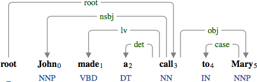
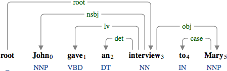
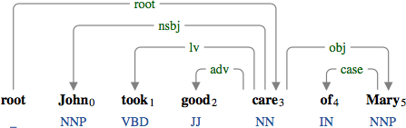
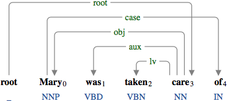
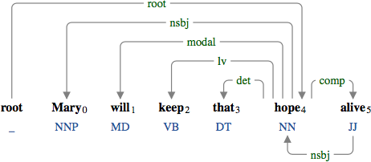
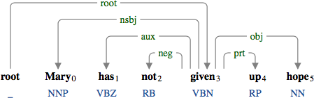

A light verb (aux) is a verb in {do, give, have, keep, make, take}, where the head of the noun phrase in its object position is an eventive noun.

The light verb "made" verbalizing the eventive noun "call".

The light verb "gave" verbalizing the eventive noun "interview".

The light verb "took" verbalizing the eventive noun "care".

The light verb "taken" verbalizing the eventive noun "care" in the passive construction.

The light verb "keep" verbalizing the eventive noun "hope".
The verb "given" in the following example is not a light verb because of its particle "up".

The noun "hope" is an object of the verb-particle construction "given up".